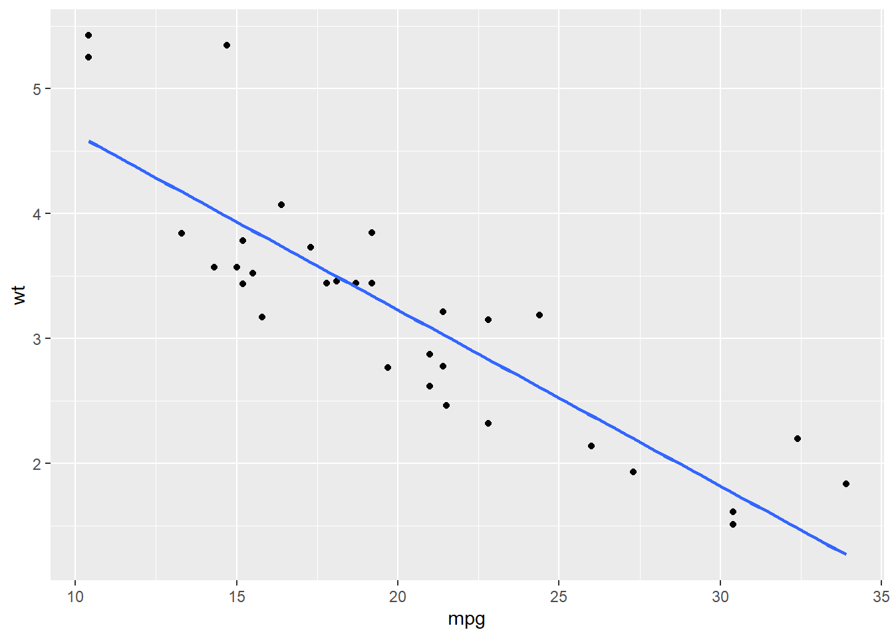

Chapter 10 Statistics in R
In this chapter, we are going to use R to do some math work.
10.1 Simple statistics
We have touched some of the functions in this topic. For example, we could use mean() to compute the average value of a set of numbers.
10.1.1 Mean and median
We could use the base functions to do some simple statistical analysis directly.
## [1] 28.77273## [1] 2910.1.3 Quantiles
## 0% 25% 50% 75% 100%
## 0.0 10.0 29.0 31.5 100.0## 25%
## 10You could add value from 0 to 1 in the quantile() to find a specific value, for example, 40%.
## 40%
## 2010.2 Linear regression
Before we start, let’s review some related knowledge first.
Regression is used to examine the linear relationships between the dependent variable and independent variables, where dependent variable is the one to be explained and independent variables (also called regressors, predictors, explanatory variables) are those may have influences on the dependent variable. For example, the dependent variable is personal income, and the independent variables are education, gender, age, etc. Among those independent variables, there are two types, one is continuous variable and the other is dummy variable. Continous variable is variable with continuous values, such as income and age. Dummy variable is variable with values of 0 and 1. For example, gender, and people could use 1 for male, and 0 for female.
Suppose we have a dependent variable \(Y\), and two independent variables \(X_1\) and \(X_2\), the regression model in assumption could be expressed as below,
\[Y = \beta_0 + \beta_1X_1 + \beta_2X_2 + \epsilon\].
Where, \(\beta_0\) is the intercept, \(\beta_1\) and \(\beta_2\) are coefficients for \(X_1\) and \(X_2\), \(\epsilon\) is the error term which is the part of the dependent variable which cannot be explained by the intercept and independent variables. The target of regression is to estimate the value of \(\beta_0\), \(\beta_1\), and \(\beta_2\), and test their significance. The coefficients for the independent variables stand for that if the independent variable change one unit, the dependent variable will change the amount of the coefficients.
The estimated model could be expressed as,
\[\hat{Y} = \hat{\beta_0} + \hat{\beta_1}X_1 + \hat{\beta_2}X_2\]
Those variables with hat are estimated variables.
While regression provides the estimated values of intercepts and coefficients, it also provides the significance of these estimates with p-values. When p-value is smaller, the estimates tend to be more significant. In R, the function will use some marks to indicate the sinificance levels. The significance level is the probability that the estimates are ‘true’.
| Mark | Descriptions of significance level |
|---|---|
| . | 90% |
| * | 95% |
| ** | 99% |
| *** | 99.9% |
To quantify the fitness of the model, we use \(R^2\) with value from 0 to 1. While \(R^2\) is close to 1, the model is good and fits the dataset well. \(R^2\) has a property that when adding more independent variables in the regression model, the \(R^2\) will increase. There is another index called adjusted \(R^2\), which considers the number of variables in the models.
Our example is the dataset mtcars, and we want to explore the relationship between mpg (Miles/(US) gallon) and wt (Weight (1000 lbs)). Let’s draw a scatter plot to see their distribution.

Based on the plot, it seems there is a linear relatitonship between these two variables. We then add a linear line to fit them with geom_smooth() in ggplot2.

Most of the points are near the fitted linear line. To quantify this linear relaitonship, We could use lm() function to fit this linear relationship and use summary() function to see the result. In the function, the formula indicates the model in assumpiton. Here, our model in assumpiton is,
\[mpg = \beta_0 + \beta_1 \times wt + \epsilon\]
When we code this model in R, we do
## mpg ~ wtWe only need to write down the variable names of the dependent variable and independent variables, and use ~ to connect them. No need to write the intercept and error term.
We also need to indicate the name of the dataset in the function.
##
## Call:
## lm(formula = mpg ~ wt, data = mtcars)
##
## Residuals:
## Min 1Q Median 3Q Max
## -4.5432 -2.3647 -0.1252 1.4096 6.8727
##
## Coefficients:
## Estimate Std. Error t value Pr(>|t|)
## (Intercept) 37.2851 1.8776 19.858 < 2e-16 ***
## wt -5.3445 0.5591 -9.559 1.29e-10 ***
## ---
## Signif. codes: 0 '***' 0.001 '**' 0.01 '*' 0.05 '.' 0.1 ' ' 1
##
## Residual standard error: 3.046 on 30 degrees of freedom
## Multiple R-squared: 0.7528, Adjusted R-squared: 0.7446
## F-statistic: 91.38 on 1 and 30 DF, p-value: 1.294e-10The summarized result provides details about the model results, such as the coefficients and p-values, the model’s \(R^2\), etc.
Based on the information, we could know that the estimated coefficient for the interscept is 37.29, its p-value is \(< 2e-16\) with a mark \(***\), showing it is significant at 99.9% level. The estimated coefficient for mpg is -5.34, its p-value is \(1.29e-10\) with a mark \(***\), showing it is significant at 99.9% level.
We could also know the \(R^2\) is 0.75, and adjusted \(R^2\) is 0.74.
We could use the codes below to check the \(R^2\) of the model directly.
## [1] 0.7528328And get the values of the coefficients directly.
## (Intercept) wt
## 37.285126 -5.344472Most of the time, we need to examine the relationship between the dependent variable and more than one independent variables. In this case, drawing a plot to check the relationship before the analysis is not a good idea. We just do the regression dicrectly.
The example below examines the relationship between mpg and disp, hp, and wt. when there is more than one independent variables, we use + to connect them in the formula.
##
## Call:
## lm(formula = mpg ~ disp + hp + wt, data = mtcars)
##
## Residuals:
## Min 1Q Median 3Q Max
## -3.891 -1.640 -0.172 1.061 5.861
##
## Coefficients:
## Estimate Std. Error t value Pr(>|t|)
## (Intercept) 37.105505 2.110815 17.579 < 2e-16 ***
## disp -0.000937 0.010350 -0.091 0.92851
## hp -0.031157 0.011436 -2.724 0.01097 *
## wt -3.800891 1.066191 -3.565 0.00133 **
## ---
## Signif. codes: 0 '***' 0.001 '**' 0.01 '*' 0.05 '.' 0.1 ' ' 1
##
## Residual standard error: 2.639 on 28 degrees of freedom
## Multiple R-squared: 0.8268, Adjusted R-squared: 0.8083
## F-statistic: 44.57 on 3 and 28 DF, p-value: 8.65e-11## [1] 0.8268361Again, without careful research design, the relationships shown by the regression model are all correlations, not causalities.
10.3 Logistic regression
The above two examples both use continuous variables as their dependent variables. How about using a binomial variable (0 or 1 as its value) a dependent variable? Then we need to do logistic regression. There are many functions to do this. When interpreting the coefficients of the logistic regression result, the coefficient stands for the change of the log odds of the dependent variable to 1.
Here, we introduce the glm() function. We need to indicate family = binomial in the function.
##
## Call:
## glm(formula = am ~ cyl + hp + wt, family = binomial, data = mtcars)
##
## Deviance Residuals:
## Min 1Q Median 3Q Max
## -2.17272 -0.14907 -0.01464 0.14116 1.27641
##
## Coefficients:
## Estimate Std. Error z value Pr(>|z|)
## (Intercept) 19.70288 8.11637 2.428 0.0152 *
## cyl 0.48760 1.07162 0.455 0.6491
## hp 0.03259 0.01886 1.728 0.0840 .
## wt -9.14947 4.15332 -2.203 0.0276 *
## ---
## Signif. codes: 0 '***' 0.001 '**' 0.01 '*' 0.05 '.' 0.1 ' ' 1
##
## (Dispersion parameter for binomial family taken to be 1)
##
## Null deviance: 43.2297 on 31 degrees of freedom
## Residual deviance: 9.8415 on 28 degrees of freedom
## AIC: 17.841
##
## Number of Fisher Scoring iterations: 8Most of the information is similar with regression ones except that the logistic regression does not have \(R^2\) and adjusted \(R^2\). It uses AIC (Akaike information criterion) in indicate the goodness of the model. If one model has smaller AIC, it is better.